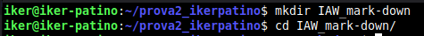
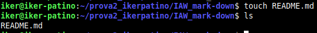
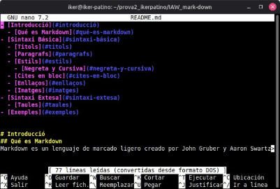
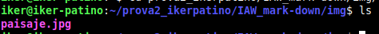
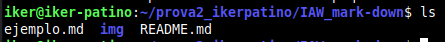
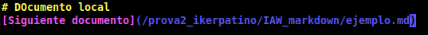
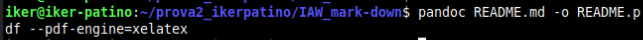
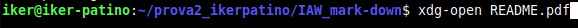
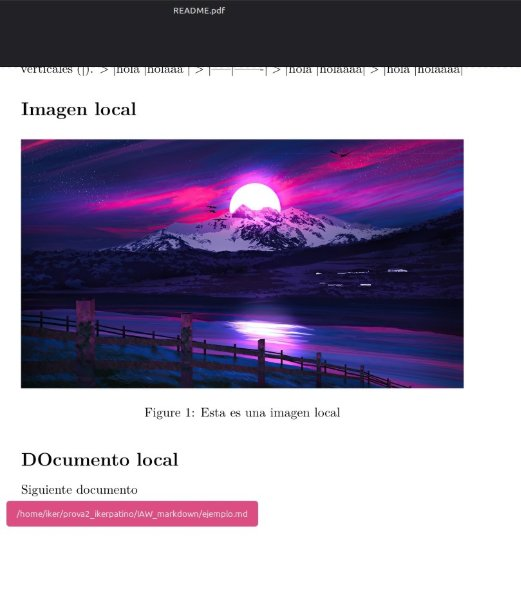
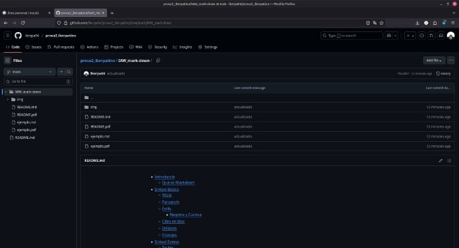

Iker Patiño Alvarez Implantació d'Aplicacions Web
Exercici 2: Introducció a Markdown
- Crea una carpeta en un repositori local (creat en l’exercici anterior) que s’anomene IAW_mark- down, que incloga un fitxer README.md.


- Afegeix contingut al fitxer README.md utilitzant tots els elements de la sintaxi de Markdown que hem recordat. Entre altres inclou:
- una imatge al document que sigui un enllaç a una URL externa.
- crea un directori anomenat img al repositori i afegeix una imatge.
- incorpora la imatge que has afegit dins del document.



- Crea un nou document markdown al repositori.

- Crea un enllaç des del fitxer README.md al nou document que acabes de crear

- Generar un document .pdf a partir del fitxer markdown.md



Ahora después de subirlo a github, podemos comprobar que está todo.
